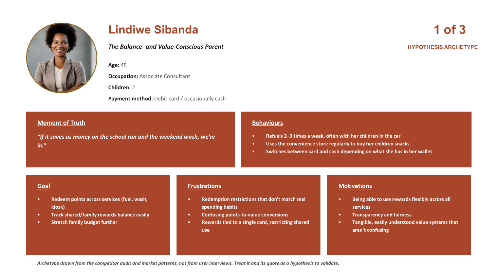
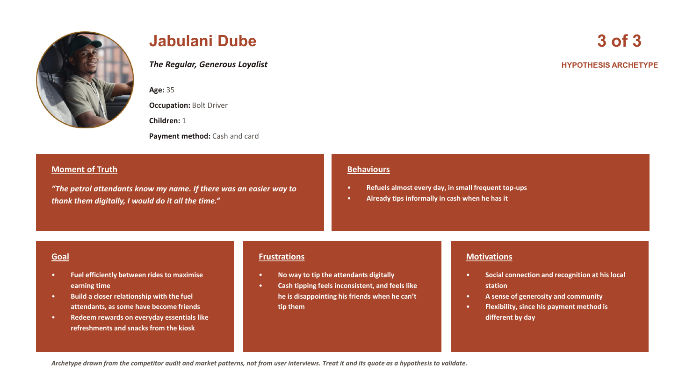
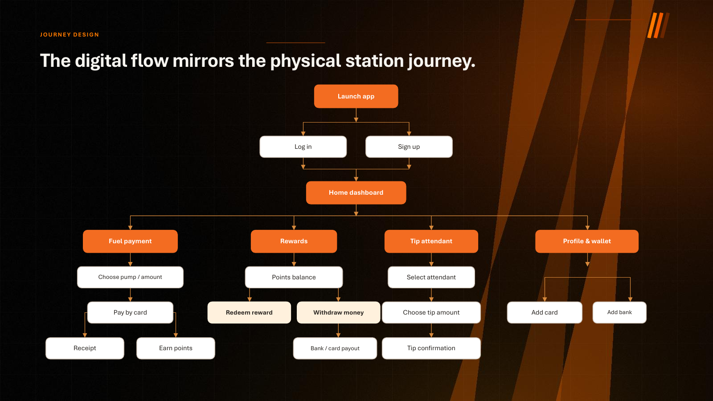
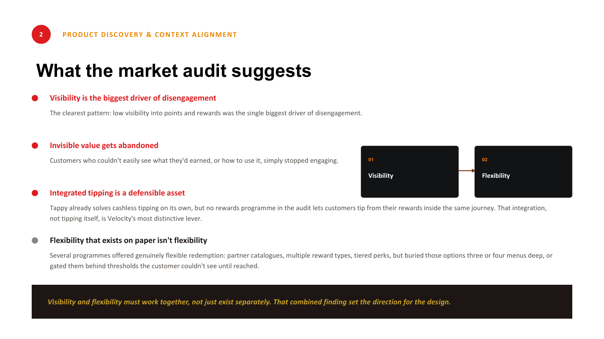
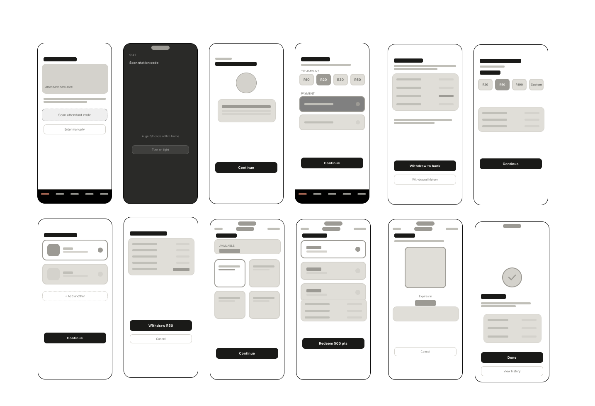

Visibility
Help customers understand their balance and what it is worth.
A mobile loyalty concept shaped by a competitor review, focused on making rewards easier to understand and use during a fuel stop.
I reviewed competing loyalty programmes and developed a concept covering reward tracking, redemption, fuel payment, wallet management and digital tipping. The audit helped identify opportunities around reward visibility, flexible use and the service moment at the pump.
Loyalty experiences can make it difficult to compare reward value, understand redemption rules or see what a balance can do. The concept explored how to make the value clearer during a familiar fuel-stop journey.
Help customers understand their balance and what it is worth.
Make earning and redemption options easier to understand.
Explore whether digital tipping fits naturally into the refuelling experience.
I compared Sasol Rewards, BP Rewards, Engen 1App, Discovery Vitality Money, eBucks and Tappy. I used the review to identify opportunity areas and shape the proposed experience.
These two archetypes represent different motivations surfaced through the competitor audit. One needs to understand value across everyday spending; the other values the relationship with attendants and wants choice in how to show appreciation. Together they highlight why the experience should not force everyone into one payment or reward behaviour.

NeedsClear value from everyday spending, an easy-to-understand rewards balance, and flexibility between payment methods.
ValuesFinancial control, practicality, transparency and getting meaningful value from routine purchases.

NeedsA quick, reliable way to recognise attendants and choose how much to tip without adding friction to a fuel stop.
ValuesPersonal relationships, generosity, convenience and having choice over how to show appreciation.
The information architecture mirrors the physical station journey. From the dashboard, people can move directly to fuel payment, rewards, tipping, or profile and wallet tasks, with each path broken into clear steps.

Fuel payment and attendant tipping are distinct, direct paths, helping keep the most time-sensitive tasks easy to reach.
Rewards has a clear home for points balance, redemption and withdrawal instead of hiding them in unrelated flows.
Payment methods and wallet management remain accessible so customers can choose how to pay and use value.
The journey connects the everyday goal of refuelling with the need to understand rewards and complete tasks quickly.
The customer opens Velocity and wants to know what is available without searching through menus.
NeedImmediate clarity on balance and key actions.
Design responseHome dashboard with a visible rewards balance and direct task entry points.
The customer wants to complete a familiar station task with minimal delay.
NeedA clear, low-friction payment path.
Design responseKeep fuel payment separate and easy to find from the main dashboard.
The customer wants to understand what has been earned and what it can be used for.
NeedVisible value and understandable redemption choices.
Design responseBring points into one balance and give rewards a dedicated area.
The customer considers redemption, withdrawal or other ways to access value.
NeedTransparent options and clear rules.
Design responseMake redemption and wallet tasks distinct, while treating cash-out as a hypothesis to validate.
The customer may want to thank an attendant without slowing down the stop.
NeedA quick and intentional tipping interaction.
Design responseA separate tipping flow that clearly identifies the attendant and amount.
Validation opportunity: Test task order, comprehension, time-on-task and whether tipping fits the real station workflow with motorists, attendants and station operators.
One synthesis slide captures the main patterns and opportunity areas from the review of Sasol Rewards, BP Rewards, Engen 1App, Discovery Vitality Money, eBucks and Tappy.

The concept develops two decisions informed by the competitor audit.
Design decision: Bring fuel and in-store purchases into one visible points balance, so customers have a simple view of what they have earned.
Research rationale: The competitor audit found that low visibility and hard-to-find redemption options weaken perceived value. One balance avoids making customers track separate wallets that reflect internal programme structures.
Design decision: Keep tipping separate from the fuel transaction, with the recipient and amount clearly identified.
Research rationale: The audit identified digital tipping as a possible differentiator when integrated into the rewards journey. A distinct flow makes the act of thanking the attendant clear rather than hiding gratuity inside the fuel payment.
The screen sequence maps the key interactions across the Velocity concept, from attendant identification and fuel payment to rewards, redemption and confirmation.

Bring balance and value into view so customers can understand what they have earned.
Consider whether customers should be able to earn without being tied to one payment card.
Consider cash access as one possible use of rewards, while checking feasibility and programme economics.
Offer a way to thank attendants digitally only if customers, attendants and station operators find it useful and workable.
Flexible redemption may increase usefulness but can add cost, rules and support requirements.
Digital tipping should not slow refuelling or create confusion for attendants and customers.
The concept connects reward visibility, earning, redemption, withdrawal, fuel payment, tipping and wallet management into one experience. The competitor audit helped shape the direction and identify the features worth exploring further.
The strongest opportunities sit at the intersection of customer value and operational fit. Cash-out and digital tipping could add flexibility, but they also affect programme economics and frontline workflows. These are the areas to investigate before setting MVP priorities.